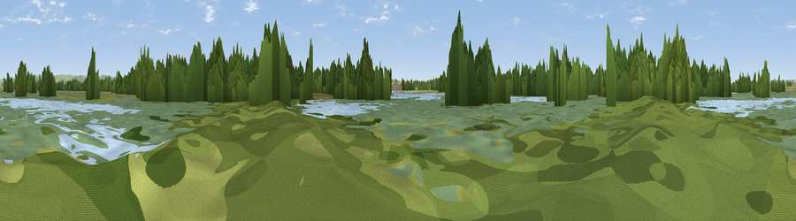

Viewing Platform 2
#37714 in England · top 87% of its area beats it · near SharphamThe view, rendered

A 360° render of this exact spot computed from the terrain model, tree cover and land cover — summer colours, afternoon light, calibrated against photographs of famous viewpoints. Real trees, hedges and buildings will differ in detail.
The panorama
Grey silhouette: terrain skyline in each direction (720 bearings, Earth curvature and refraction included). Dashed green: skyline with trees (+15 m) and buildings (+8 m) as obstacles. Blue strip: how far the ground is visible on each bearing.
Where the view opens
Wedge length = distance to the farthest visible ground on that bearing (vegetation-aware). Rings at 10, 25 and 50 km.
What fills the view
28% wetland · 28% grassland · 23% woodland · 14% water · 5% cropland · 3% built-up
Angular shares of the visible panorama (visual magnitude), not map area. Landscape diversity 0.68 (0–1 Shannon).
Key numbers
More beautiful places nearby
The staircase of upgrades: each row has a higher view potential than everything closer. Driving times are estimates from straight-line distance, calibrated against real road routing — check an actual route before setting out.
| Place | Direction | Drive | Score |
|---|---|---|---|
| Viewpoint near Glastonbury | ESE · 3 km | ~8 min | 59.8 |
| Viewpoint near Glastonbury | ESE · 5 km | ~10 min | 66.8 |
| Glastonbury Tor | ESE · 5 km | ~11 min | 75.8 |
| Socombe Hill | WSW · 8 km | ~15 min | 76.4 |
| Viewpoint near Axbridge | NNW · 16 km | ~29 min | 79.2 |
| Beacon Batch | N · 18 km | ~31 min | 79.4 |
| Bleadon Hill [Loxton Hill] | NNW · 20 km | ~34 min | 79.6 |
| Cothelstone Hill | WSW · 28 km | ~44 min | 82.1 |
51.15399, -2.77152 · source: osm viewpoint · position refined by local search. Computed location — check access rights before visiting.